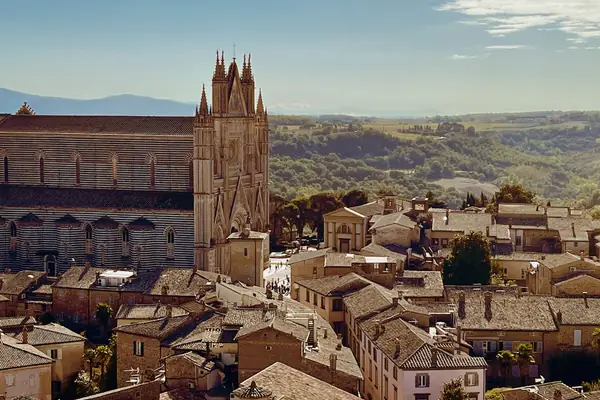

Home › Wine regions › Umbria
Umbria wine region

Photo: T S on Unsplash
Powerful Sagrantino and easy-drinking Orvieto.
Vines grow in all 20 regions. Wines are classed DOCG, DOC and IGT.
CountryItaly
Notable producers in Umbria
- Arnaldo Caprai
- Paolo Bea
- Lungarotti
- Castello della Sala
- Scacciadiavoli
Official appellations
| Appellation | Status | Style | Grapes |
|---|---|---|---|
| Montefalco Sagrantino (1992) 100% Sagrantino from around the hill town of Montefalco, among the most tannic reds in Italy. At least 37 months of ageing including 12 in barrel; a Passito version is made from dried grapes. | DOCG | Red, Sweet | Sagrantino |
| Torgiano Rosso Riserva (1990) Red Riserva from the single commune of Torgiano, on gentle hills where the Tiber and Chiascio rivers meet just south of Perugia. Sangiovese makes up 70–100%, the rest other Umbrian red grapes, and the wine needs 3 years' ageing including a spell in wood before release. Good to know: the denomination was effectively built by the Lungarotti family, whose Rubesco Vigna Monticchio is its benchmark; the white and lighter reds are sold as Torgiano DOC. | DOCG | Red | Sangiovese |
| Amelia Southern Umbria DOC. | DOC | White, Red | Sangiovese, Grechetto |
| Assisi Wines from below the town of Assisi. | DOC | White, Red | Grechetto, Sangiovese |
| Colli Altotiberini Upper Tiber valley. | DOC | White, Red | Sangiovese, Trebbiano |
| Colli del Trasimeno Around Lake Trasimeno; Gamay here is a local Grenache. | DOC | White, Red | Gamay del Trasimeno, Sangiovese |
| Colli Martani Hills between Todi and Spoleto; Grechetto country. | DOC | White, Red | Grechetto, Sangiovese |
| Colli Perugini Hills around Perugia. | DOC | White, Red | Sangiovese, Trebbiano |
| Lago di Corbara Small DOC near Orvieto. | DOC | Red | Sangiovese, Cabernet Sauvignon |
| Montefalco Montefalco Rosso (Sangiovese with Sagrantino) and Montefalco Bianco. | DOC | Red, White | Sangiovese, Sagrantino, Trebbiano Spoletino |
| Orvieto (1971) Classic Umbrian white, dry to sweet, shared with Lazio; Orvieto Classico from the historic core. | DOC | White | Grechetto, Trebbiano |
| Rosso Orvietano Reds from the Orvieto area. | DOC | Red | Sangiovese |
| Spoleto Home of Trebbiano Spoletino, a distinctive local white. | DOC | White | Trebbiano Spoletino |
| Todi Grechetto di Todi and reds. | DOC | White, Red | Grechetto, Sangiovese |
| Torgiano Torgiano's DOC for younger wines. | DOC | White, Red | Sangiovese, Trebbiano |
Umbria wines to try
Arnaldo Caprai Sagrantino di Montefalco 25 Anni
Umbria · Montefalco Sagrantino · Sagrantino
Powerful and tannic: blackberry, plum, cocoa and spice; needs time.
Food: Wild boar, game stews, pecorino
More wine regions in Italy
TuscanyPiedmontVenetoSicilyAosta ValleyLombardyTrentino-Alto AdigeFriuli-Venezia GiuliaLiguriaEmilia-RomagnaMarcheLazioAbruzzoMoliseCampaniaPugliaBasilicataCalabriaSardinia
The Wine Reference newsletter
New wines, stories and career guides, one email a week at most.
Over 18s only. Unsubscribe any time with one click. Your email is stored securely by Kit and never shared.
Support The Wine Reference
This guide is free, with no paywall. If it helped you choose a bottle, you can buy me a glass and keep it growing.
🍷 Buy me a glass